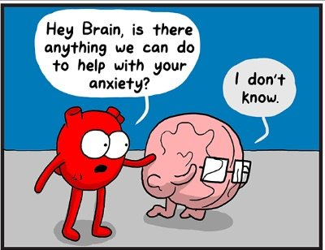

“There's something deep inside of us that actually wants to suffer, that indulges in suffering. ...because through suffering we can continue to hold onto everything that we think is true." --Adyashanti
There’s a whole lot of depression, anxiety and anger out there. People suffer. People hurt.
I don’t need to tell you this. You’re a people. You know.
You also know there’s a whole lot of advice, method and blather about how to handle said suffering. Most adults who hurt like this have already tried many approaches and finally landed on one they rely on.
Whether it “works” or not.
Because look around and you might see that some very hotly-foisted, “No, that’s just wrong!” opinions about depression and anxiety come from people who are… still depressed and anxious.
And just like every religious or political side-taker, they block, they unsubscribe, they suggest books and podcasts that offer the proper (aka their) way of dealing with pain.
Which is kind of too bad, really. Because fresh ideas are not a bad thing. 'Specially since they’re no thing at all.
Meanwhile, what all experiencers of bad feelings have in common is the desire to describe how hard things are.
Like, non-stop.
Because let’s face it, we humans love to narrate, analyze and think about how we feel. Especially how bad we feel.
Now granted this discussion may not be out-loud. But whether silent or spoken, the commentary runs.
“I’m so anxious. This is crazy, this is awful. Can’t shake it. Too hard. It’s heavy, squeezing my chest, contracting. Feels like I’m dying. Always there, been like this for years, getting worse. I can’t take it. Gotta make this stop. Don’t think I can go on.”
While going on. And on.
If we have to go out, we ache to get home, back into bed, so we can continue the ongoing mental summation about how awful we feel.
“How can I leave home when this black cloud is with me? This isn’t right, this isn’t normal. I can’t wait to get out of here. I’m a fraud, pretending not to suffer. THEY are not hurting. It's me, damaged, broken. Too hard to hide. Feels so bad. I want out.”
Or, when we do talk about it out-loud, all we want is someone to sit still and listen. To us. While we pour our pain into their waiting receptacle. We want empathic nods. We want, “There there honey, I hear you, I’m so sorry, yes that’s awful.” We want validation.
Of a feeling we hate. Of a feeling we ourselves want gone.
But sure let’s validate it.
Of course none of this is to say we shouldn’t talk about how we feel. Talking is fine. Pouring is fine. And of course I’m not unsympathetic. I spent much of my life depressed and anxious- I do get it and there there honey, I really am with you.
It’s just all that allowing and endless describing and nonstop narration has perhaps made our suffering so comfy, so loved, that like a teenager in the basement…
it simply has no reason to move out.
All those words constantly itemizing how we feel are like putting a pin in a butterfly.
It can’t fly off.
We won't shut up long enough to let it.
So perhaps we actually love the pain we claim to hate.
Now I realize this might not be what you want to hear. It might even be completely infuriating. “There’s no way I like this pain! Shut up Judy!” As you reach for the opt-out link.
I get it. The thing is, before you go, maybe you’d be willing to try something.
Maybe try feeling the feeling without all the commentary about it, without all the blow-by-blow of what it feels like.
Maybe see what happens to hard feelings when you remove the labels ("I'm depressed!") and the wordy repetitive chronicling of heaviness, or meaning, or forever-ness, or past trauma.
Maybe explore what happens to a feeling when it’s actually, simply, felt, instead of described.
If you can. It's easier said than done.
Because after lifetimes of indulging the narrative and pinning the feeling down, it is not necessarily easy to unpin.
It can be done though, and if you can slow the reporting for even just a bit, you might be amazed to find that that familiar, despised feeling kind of goes…
Poof.
And floats off.
All by itself.
Leaving space, quiet, stillness.
Without having to inquire, realize or understand. Without having to sit-with, validate or indulge.
I mean you can do all that. But you probably won’t want to.
Because once you see how airy and vaporous feelings really are,
And how all the language is what is holding them here...
You might no longer want to discuss them ad nauseam.
Which just might feel…
Pretty darn good.
"Let everything happen to you.
Beauty and terror.
Just keep going.
No feeling is final.”
—Rainer Maria Rilke
People Hurt- 2
